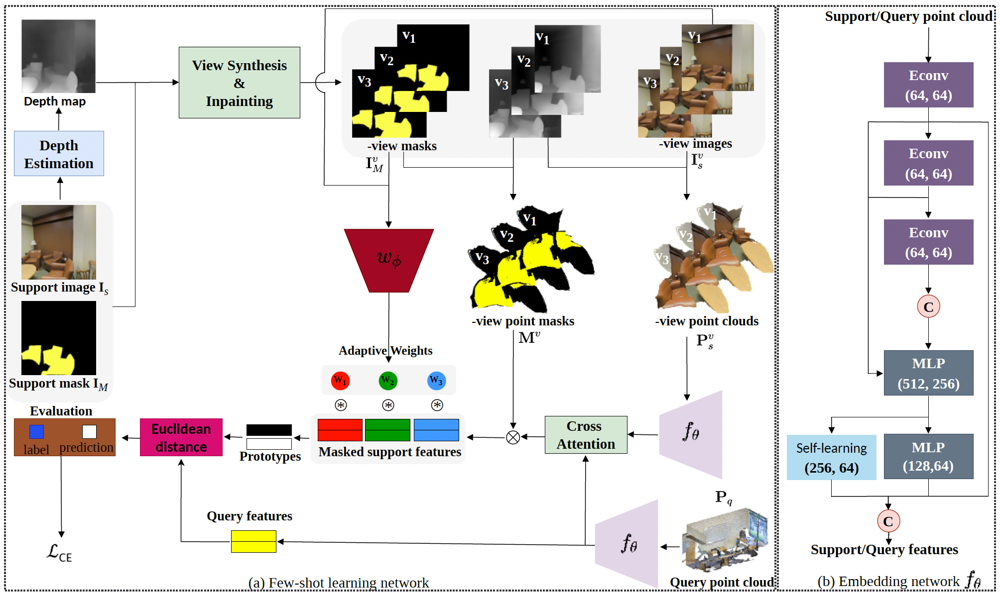
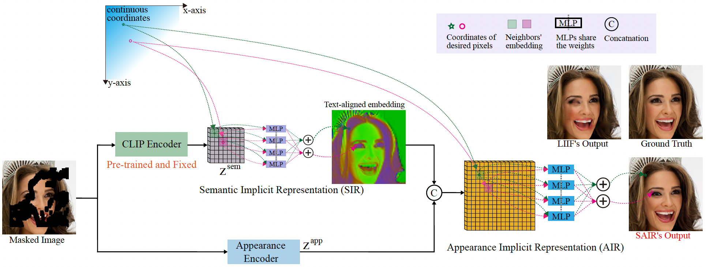
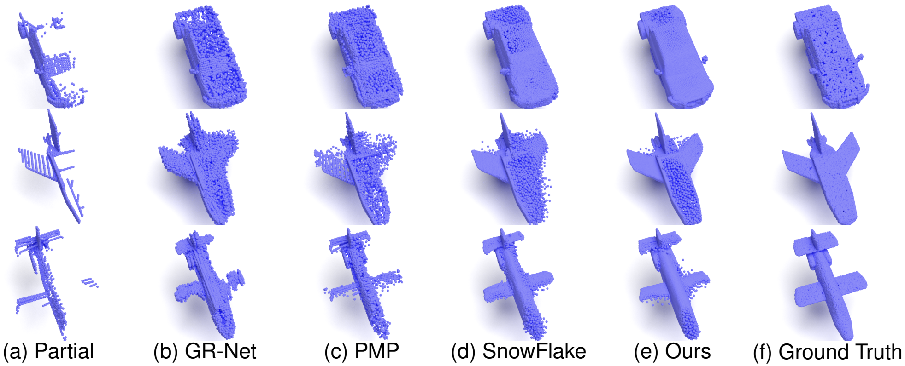
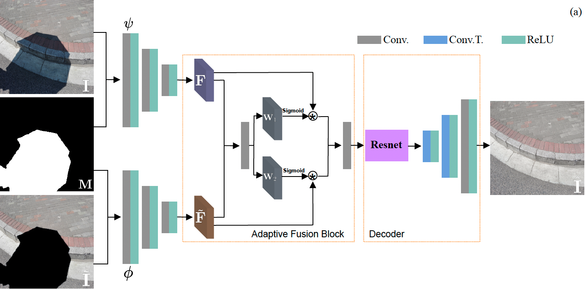
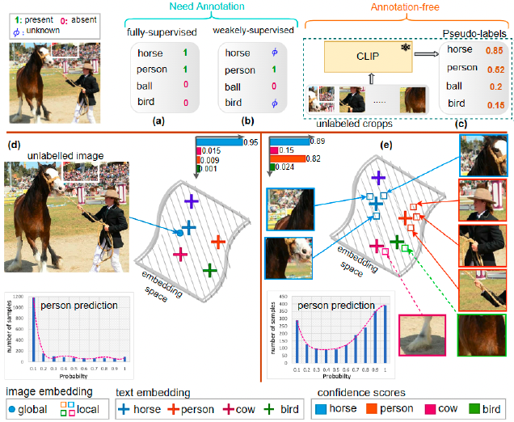

UofSC
UofSC
 Google Scholar
Google Scholar
 xl22@email.sc.edu
xl22@email.sc.edu
About me
I am currently working at eBay as an applied researcher. My research focuses on computer vision, particularly for image restoration tasks such as image and video inpainting, shadow removal, and super-resolution, as well as object detection, image classification, and image retrieval.
Education
- 2020 - 2024, Ph.D. in Computer Science, University of South Carolina, United States
- 2020 - 2022, M.S. in Computer Science, University of South Carolina, United States
- 2009 - 2013, B.S. in Computer Science, Zhengzhou University, China
Academic Services
- Program Committee for Association for the Advancement of Artificial Intelligence (AAAI)
- Reviewer of Conference on Computer Vision and Pattern Recognition (CVPR)
- Reviewer of International Conference on Computer Vision (ICCV)
- Reviewer of European Conference on Computer Vision (ECCV)
- Reviewer of Association for the Advancement of Artificial Intelligence (AAAI)
- Reviewer of ACM International Conference on Multimedia (ACM MM)
- Reviewer of Asian Conference on Computer Vision (ACCV)
- Reviewer of Conference on Artificial Intelligence (CAI)
- Reviewer of Conference on Multimedia Expo (CME)
- Reviewer of International Journal of Computer Vision (IJCV)
- Reviewer of Transactions on Pattern Analysis and Machine Intelligence (TPAMI)
- Reviewer of Transactions on Circuits and Systems for Video Technology (TCSVT)
- Reviewer of Transactions on Neural Networks and Learning Systems (TNNLS)
- Reviewer of Transactions on Intelligent Vehicles (TIV)
- Reviewer of Pattern Recognition Letters (PRL)
- Reviewer of Transactions on Multimedia (TMM)
Publications
* co-first author and contribute equally, † corresponding author|  | |
|  | |
|  | |
|  | |
|  | |

|
|

|
|

|